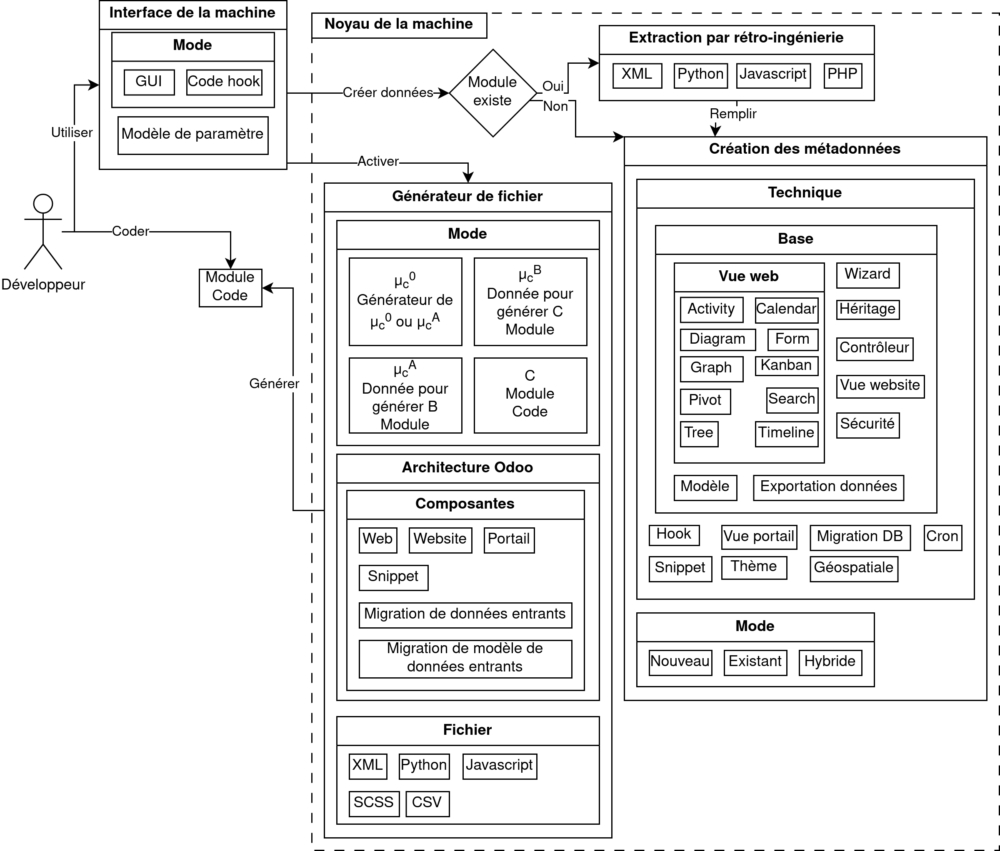

Présenté par Mathieu Benoit
- Président : Martin Trépanier, Ph. D.
- Directeur de recherche : Samuel Jean Bassetto, Doctorat
- Membre : Giovanni Beltrame, Ph. D.
Plan de présentation
- Présentation de Mathieu Benoit
-
Résultats
- 6 niveaux de production en ingénierie numérique
- Démonstration
- Projets d'étude
- Conclusion
Mathieu Benoit

- Développeur de logiciel libre
- Entrepreneur
- B.Ing. Informatique Libre
Mathieu Benoit
- MathBenTech - 2018
- SantéLibre - 2020
- TechnoLibre - 2020
Développement ERPLibre pour automatiser Odoo et rendre accessible un déploiement 100% libre.
Valeur du libre
- Solution pour réseau d'entraide
- Sans limitation technique pour comprendre et résoudre des défis
- Valorisation et reconnaissance du développeur logiciel
Réseau d'entraide
Problématique locale : Gestion des besoins de sociétés jusqu'aux individus
Besoins technologiques
- Communication
-
Partage et gestion des ressources
- Gestion du matériel
- Suivi des procédures et traçabilité
- Système de reconnaissance sur l'entraide
- Amélioration continue
Et bien plus encore!
- Plateforme ERPLibre 1.5.0 qui utilise Odoo 12 communautaire
- 2977 modules accessibles
- ecommerce, sondage, portail, newsletter, support client, CRM, contact, suivi de fabrication, projet, etc.
- Marché des solutions ERP évalué autour de 40 milliards USD mondialement en 2020
- Développement perpétuel, de longue durée, coûteux en temps et argent
- Difficile d'avoir une pérennité sur des projets bénévoles
- Maintenance exigente et risque d'introduire des erreurs est important

Pour réduire le temps de développement, faciliter son déploiement et le suivi de la satisfaction d'utilisation.
Ingénierie sans numérique
- Procédure papier
- Faire de l'entraide
- Réaliser des projets communautaires
Ingénierie avec numérique
Niveau 1
Système ERP
Ingénierie traditionnelle en développement logiciel
Logiciel libre
- Publication et partage
- Utilisation du logiciel propriétaire en dernier recours
Problématique
Démonstration génération module
Module :
Générateur de code
Project existant
https://github.com/bluisknot/github_odoo_apps/tree/12.0
- code_generator
- code_generator_db_servers
Technique de génération de code
- Par Template
Problématique
Générateur de code avec rétroaction
Technique de génération de code avec rétroaction
- Réplicateur
- Générateur de générateur
- Auto-générateur
Réplicateur
- Lire du code
- Étudie du code. Condition de continuer ou abandon.
- Copie le code
- Modifie
Tester le générateur
- Validation de la source avec un suivi des modifications dans le code.
Rétro-ingénierie

Capacité d'extraire des informations sur un code pour créer une altération et permettre la ré-ingénierie grâce à l'arbre de la syntaxe abstraite(AST).
Génération de code par rétro-ingénierie

Boucle de génération de code qui permet l'amélioration continue. Auto-génération lorsque
C = M
Performance
- Exécution de génération. 1s, 5s, 30s.
- Migration de modèle de données. Accorderie, 1m 30s.
- Migration de données (importation). Plusieurs heures.
Mesurer les performances
Il y a plusieurs cas à étudier.
- Ingénierie manuelle. Exemple 1h.
- Ajout technique de génération. Exemple 1h (base) + ajout (1h)
- Exécution de la technique. 1-5 secondes l'algorithme. 15 min choisir les données.
Méthodologie de développement
- Mode sprint
- Extreme programming en solo
- Pas de planification de vue globale
Problématique
Autopoïèse
Poïèse
Processus créatif de fabrication, de production ou de création.
Technopoïèse
Processus créatif de développement technologique.
Capacité de l'humanité à créer et à façonner la technologie pour répondre à ses besoins et à ses désirs.
La technologie est un outil.
Allopoïèse
Un système qui développe quelque chose avec des composantes externes.
Autopoïèse
Un système qui se développe soi-même avec seulement des composantes internes.
Contraire de l'Allopoïèse
- Autonome
- Individuel
- Connaissant et établis ses limites
- Absent d'entrant et de sortant
C'est un auto-reproducteur!
Auto-reproducteur
Le quine se produit par lui-même, de niveau 0. C'est un programme informatique qui imprime son propre code source.
Résultat
Technique d'autopoïèse
- Auto-générateur
- Auto-ingénierie
- Développement de technique automatisée
Problématique
Sympoïèse
Technique de sympoïèse
- Automatisation collaborative entre robot
- Réduction du réchauffement climatique
Sympoïèse
Un système qui se développe en collectivité et en collaboration qui a un effet bénéfique sur les écosystèmes.
- Technologie éthique
- Sortir des individus/organismes de l'isolement
- Gérer des cas d'urgences
- Mouvement des villes en transition
ORE
Accorderie

Migration de données, migration du modèles de données, génération du portail, etc.
Démonstration ORE
- Processus d'échange de temps
- Adaptation en temps réel du processus via un diagramme de relation.
CEPPP
CEPPP
Extraction du modèle de données d'une plateforme externe en PHP + ré-ingénierie.
CEPPP (SUITE)
Anonymisation des données (non supporté par le générateur)

Logiciel Libre
- utiliser sans restriction;
- étudier pour comprendre;
- copier pour s'attribuer;
- modifier pour adapter, en redistribuant.
Logiciel libre en industrie
- respecter les demandes et besoins de leurs consommateurs;
- bénéficier d'une réduction du gaspillage de temps de développement par la réutilisation de code existant;
Copier du logiciel utilise peu de ressource matérielle. Le développement de logiciel est une ressource infinie dont la fabrication est coûteuse en temps.
Résultat du générateur de code
1. MVC - 2. Gabarit - 3. Données - 4. BD externe
Séquence d'utilisation
Résultat de l'amélioraton continue
- Extraction du code via l’utilisation d’un AST et extraction des méta-données dans les fichiers XML;
- Amélioration continue sur la génération de code grâce à la reproduction à l’aide de l’extraction du code;
- Un outil pour aider à la création de technique de génération à l’aide d’un générateur de générateur de code;
- Le générateur de code est accompagné de tests de validation en reproduisant l’ensemble des techniques en démonstration;
- La génération de code applique des règles de codage standardisées.
Résultat sur l'interface


Principale conclusions de la recherche
Ingénierie

Principale conclusions de la recherche
Communauté

Question demeurée sans réponse
Manque de test et métrique sur les performances de génération et d'utilisation.
Manque d'intégration des procédures de gestion de communauté à même l'outil.
Manque d'outil pour compléter le devops.
Manque de configuration sur la génération pour différent paramètre.
Question demeurée sans réponse
Auto-poïèse à terminer.
Peut-on générer toute la plateforme entièrement pour Accorderie et CEPPP?
Débouchent sur de nouvelles voies de recherche
Intégration NLP, auto-génération, auto-amélioration. Robot codeur libre!
Tester la gestion de projet en simulation état d'urgence.